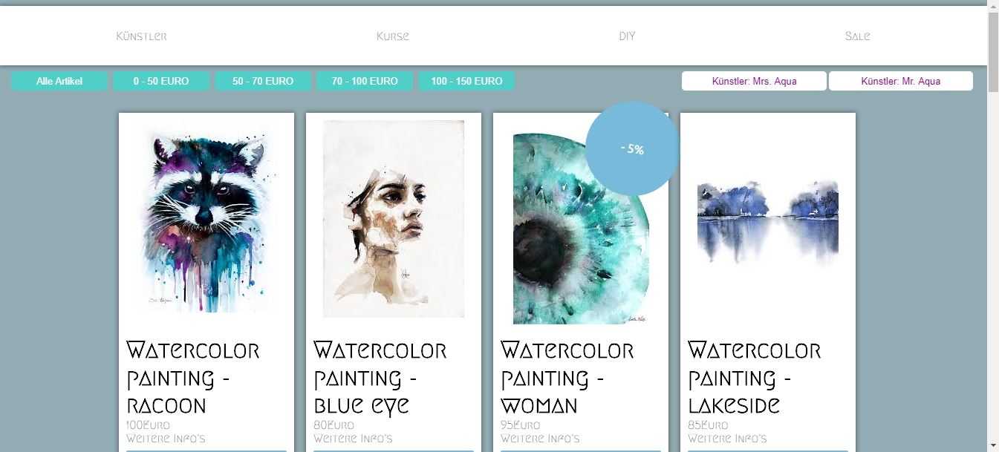
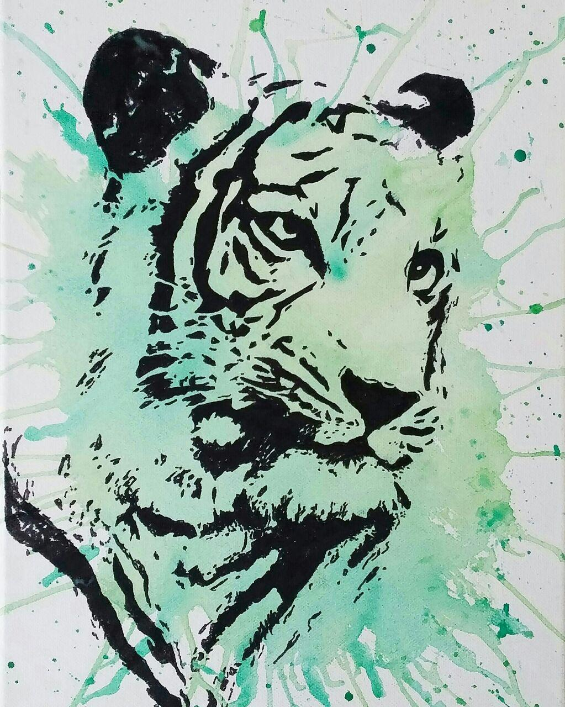
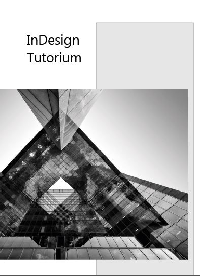
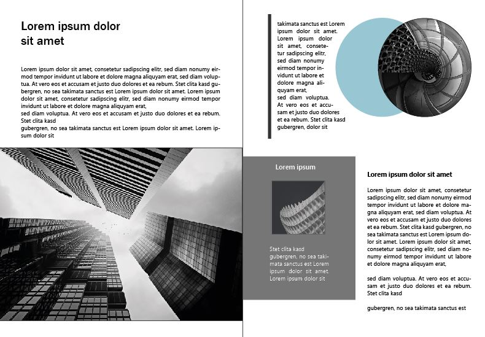
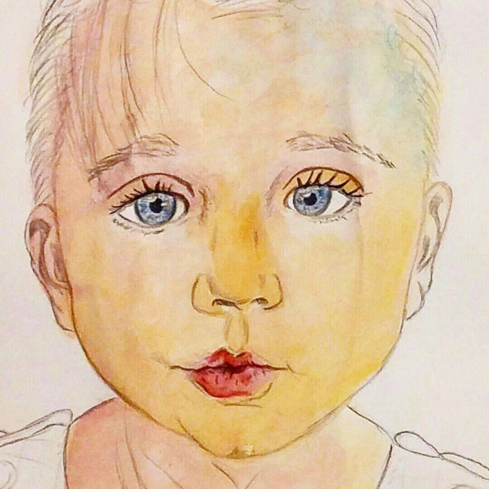
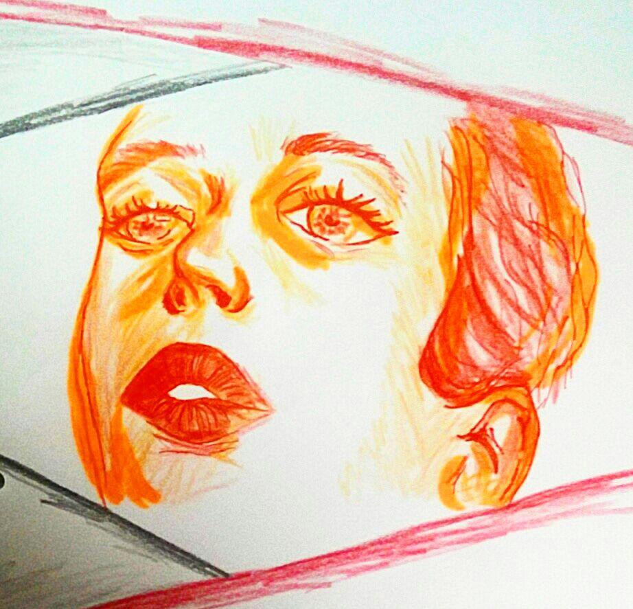
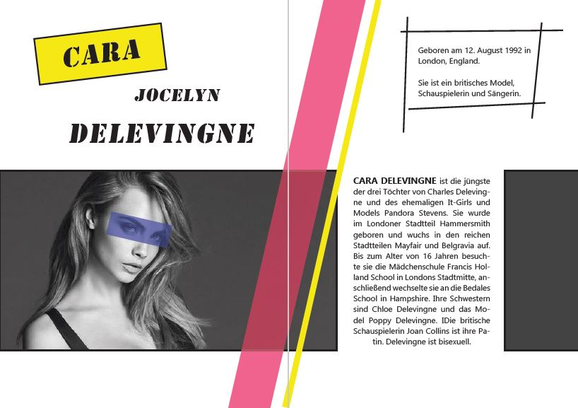
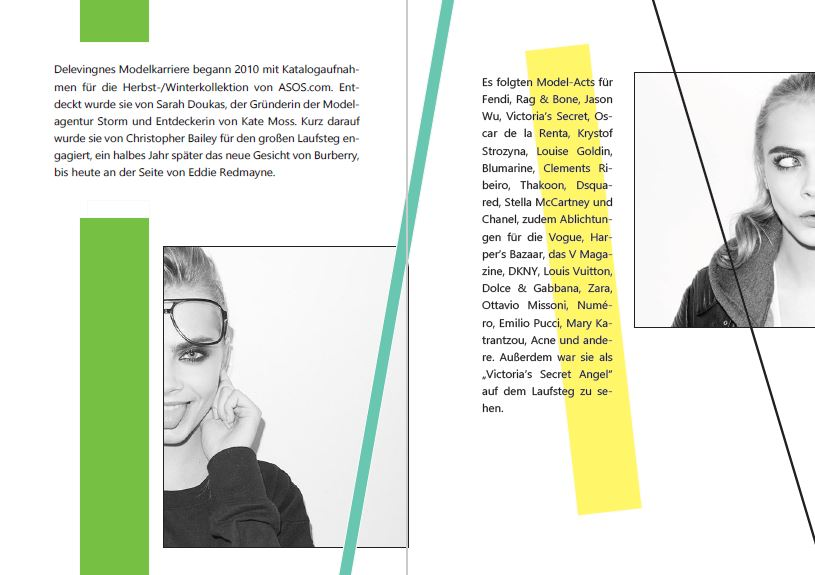

Jaqueline Schnitzer
ÜBER MICH
Mein Name ist Jaqueline.
Aufgewachsen im romantischen Franken zog mich das Studium in die Tiefen des idyllischen Schwarzwaldes, direkt nach Furtwangen.
Als angehende Medienkonzeptionistin liebe ich es Dinge zu erschaffen und einer Idee oder einem Gedanken, und sei er noch so flüchtig, Leben einzuhauchen.
Zeichnen ist seit meiner Kindheit ein wichtiger Teil meines Lebens. Die Freude daran habe ich all die Jahre nicht verloren.
Überzeugt euch selbst davon und durchstöbert meine Projekte.
Have fun!
Meine Werke/Meine Leidenschaft
In Rahmen der Veranstaltung "Entwicklung interaktiver Anwendungen" entstand ein einfach strukturierter Webshop.






